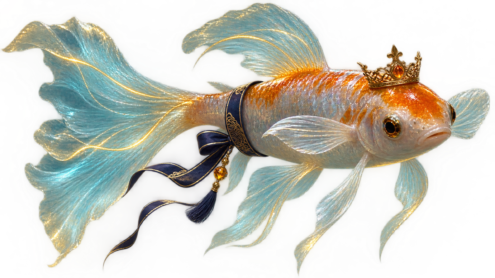
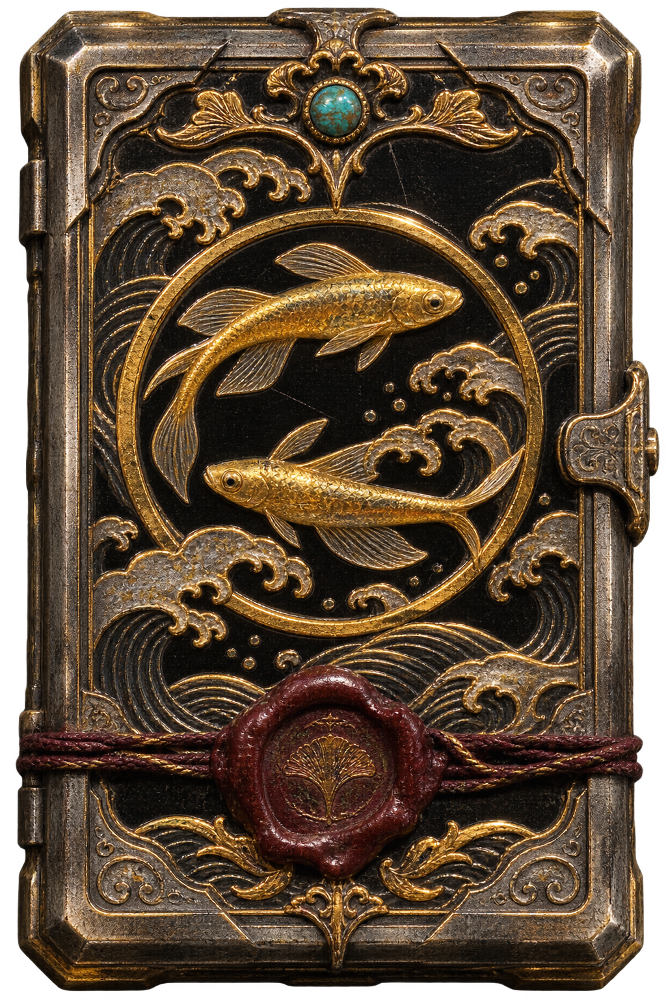
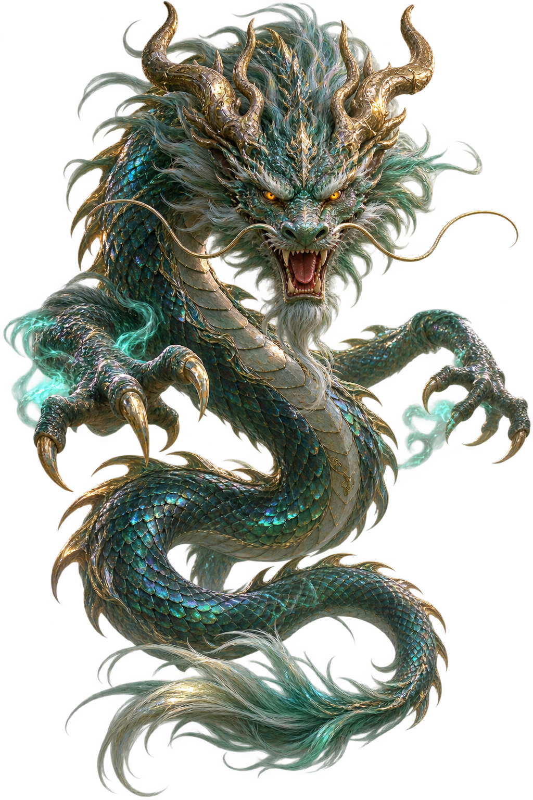
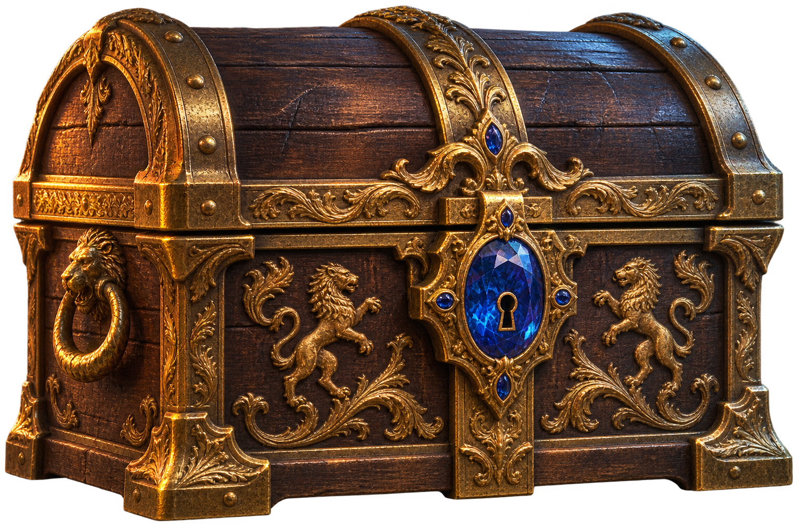

CINEMATIC EDITION / 03
一瞬の静寂。その先の覚醒。極彩降臨

SHIZUKU / めだかの精霊演出を選んで試す
無料の演出サンプル · 景品は仮画像
BANSHU MEDAKA

BANSHU MEDAKA
極
極彩降臨PREMIUM MEDAKA

いくよ！
✦✦✦
静寂を、破れ。目覚めよ
極 彩 覚 醒
突 破
届かず…まだ、終わらない？

景品未登録 · 画像は演出用の共通イメージ

運命を、解き放て。タップで突破 · 操作なしでも進みます
NEXT EPISODE次回予告極彩、覚醒。この一撃が、運命を変える。